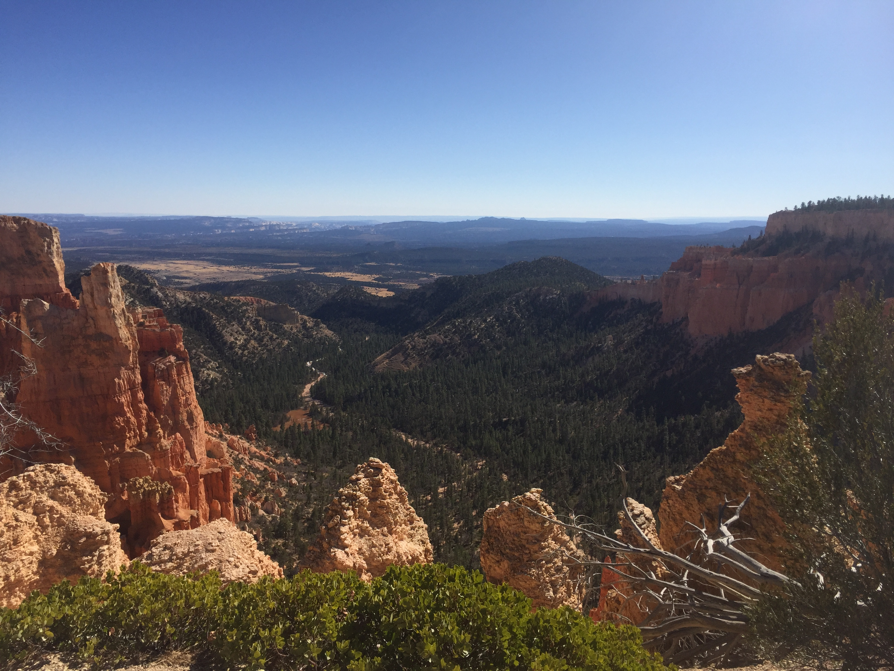

Flagstaff, Horseshoe Bend, and Navajo Bridge: October 27th & 28th
A photograph of breakfast at Over Easy in Flagstaff, AZ. Eggs Benedict with pulled pork and hatch chilesSelfie Opportunity at Horseshoe Bend!Horseshoe Bend. Most of these pictures don't do the views justice.A view of the Colorado River from the Navajo Bridge
Rim to Rim - Night 1: Night of October 28th
Our North Rim campsite after the first night. Below freezing and very windy!
Rim to Rim - Day 1: October 29th
Let's begin the hike!Roaring Springs. I could hear it, although you can barely see it in this photo!
Rim to Rim - Night 2: Night of October 29th
Our tent at Cottonwood Campground, after the second night of camping. We slept from 6:30PM to 6:30AM.
Rim to Rim - Day 2: October 30th
A photograph of our packs taking a break, as we took a break for lunch.
Rim to Rim - Night 3: Night of October 30th
A view from the bridge across the Colorado River near our campsite at Bright Angel Campground.
Rim to Rim - Day 3: October 31st
A view of the Colorado River before sunrise as we started the last stretch of the hike.Halloween fun on the trail! There were people celebrating the holiday all around.Hiking up... and up... and upOne of a few creek crossings! A lot more lush than we anticipate.Overlooking the Canyon from near the top of the South Rim.The end is in sight! See that shiny silver object?My parents at the finish line!
Bryce Canyon National Park: November 1st

A landscape photo from Bryce Canyon
Zion National Park: November 2nd
On a shuttle bus at ZionA landscape photo from ZionA funny sign outside of Zion Brewery
Headed Home!: November 3rd
Boarding at the Flagstaff Airport. There are only two terminals!Heading back to Kansas City